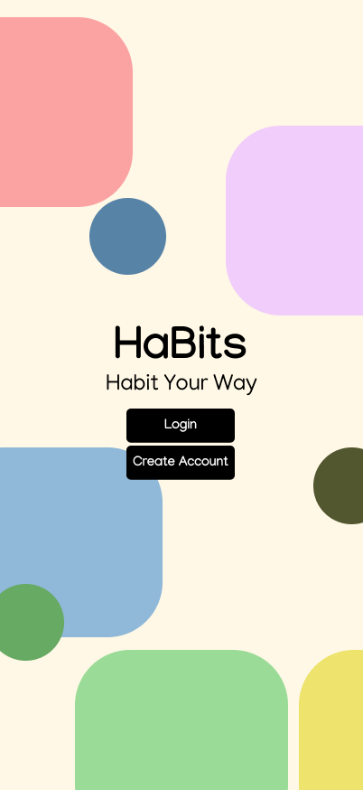
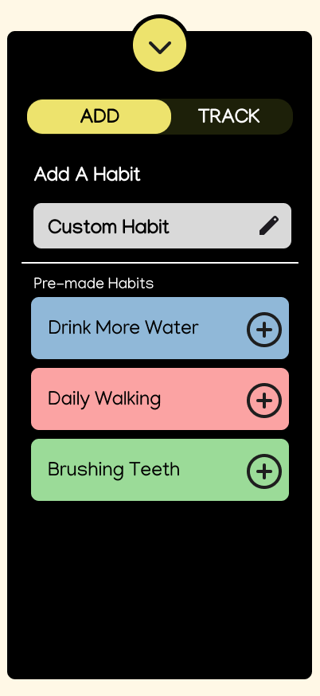

HaBits Project
Overview
HaBits is a habit tracking app that I was part of creating in a semester-long student project for a prototyping class. The idea was to create something different from existing habit trackers by allowing users to:
- Create custom habits and categories for those habits to fit into.
- Move widgets (known as bits) around on the screen to optimize their own experience.
- Sync their HaBits account with other accounts, allowing them to automatically check off goals using metrics from other services such as fitness tracking apps or music services.
Methodologies
We used several methodologies for this project. We first did a design charette in order to come up with our initial lo-fi design, as well as creating a moodboard in order to come up with ideas for our final style guide. We also created personas of potential users to get an idea of the features we would need to include in the prototypes. We created a mid fidelity prototype and conducted user testing, in which we presented potential users with a few tasks to complete using the prototype. We then used the feedback from those sessions to improve our design and ended the project with a high fidelity prototype and write-up of our entire process.
My Role
I worked as both designer and researcher on this project. I participated in all lo-fi design activities with the team and helped with logistics on both the mid and high fidelity prototypes. I helped write the test plan, conduct user testing, and extract design requirements from those sessions. Finally, I assisted in writing the final report summarizing the entire project.
Project Deliverables
Final Design


Final Report
To get a better look into this project you can read the final report here.
Key Takeaways
In this project, I got a good look at the entire prototyping process and how one works their way from a simple idea to a high fidelity prototype using design practices and user testing. I was also able to practice writing test plans and executing those plans to improve initial designs. If I had more time with this project, I would conduct more user experience testing using the high fidelity prototype and work out how the features needed to be adjusted to be the most successful.